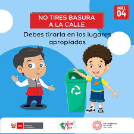
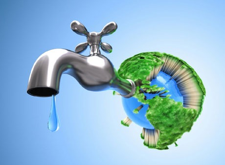

lista de cuidados
- No arrojar basura en calles, ríos ni parques.
- Separar y reciclar los residuos.
- Ahorrar agua cerrando bien las llaves.
- Apagar luces y aparatos que no se usen.
- Reducir el uso de plásticos.
- Reutilizar materiales siempre que sea posible.
- Cuidar plantas y animales.
- Usar transporte público, bicicleta o caminar.
Pasos para cuidar el medio ambiente
- Reducir el consumo de plástico.
- Reutilizar materiales siempre que sea posible.
- Reciclar los residuos correctamente.
- Ahorrar agua y energía.
- Proteger plantas y animales.


